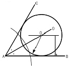
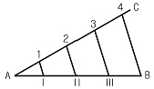
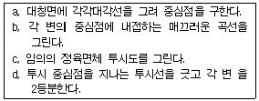

컴퓨터그래픽스운용기능사 (2006-10-01 기출문제)
1과목: 산업디자인 일반
1. 다음 중 시지각의 원리에 근거를 둔 추상적, 기계적 형태의 반복과 연속 등을 통한 시각적 환영, 지각, 색채의 물리적 및 심리적 효과와 관련한 디자인 사조는?
- 아르누보
- 미술공예운동
- 팝디자인 운동
- 옵아트
(정답률: 71%)

2. 기업에서 실시하고 있는 CI란 무엇인가?
- 회사의 경영 방침
- 상품의 개발전략
- 제품디자인 개발 정책
- 기업의 전략적 이미지 통합
(정답률: 89%)
3. 다음 중 평판제판에 해당하는 것은?
- 오프셋인쇄
- 활판인쇄
- 그라비어인쇄
- 스크린인쇄
(정답률: 57%)
4. 실내 디자인에서 CAD(computer aided design)의 이용이 늘어나는 이유로 부적한 것은?
- 래스터 이미지로 선택된 물체의 변수 값을 달리하여 쉽게 수정될 수 있다.
- 정확한 수치로 도면을 그릴 수 있다.
- 도면의 부분적인 수정을 하기에 편리하다.
- 수정을 하더라도 원본처럼 깨끗한 도면을 출력시킬 수 있다.
(정답률: 73%)
5. 다음 중 기본 형태에 대한 설명이 올바른 것은?
- 면 : 물체가 점유하는 공간
- 선 : 면의 한계 또는 교차
- 점 : 입체의 한계 또는 교차
- 입체 : 선의 한계 또는 교차
(정답률: 72%)
6. 선의 유형별 특징에 관한 설명 중 잘못된 것은?
- 직선은 경직, 명료, 확실, 남성적 성격을 나타낸다.
- 곡선은 고결, 희망을 나타내며 상승감, 긴장감을 높여준다.
- 사선은 동적이고 불안정한 느낌을 주지만 강한 표현을 나타내기도 한다.
- 수평선은 평화, 정지를 나타내고 안정감을 더해준다.
(정답률: 79%)
7. 게쉬탈트(gestalt)의 시각에 관한 기본 법칙이 아닌 것은?
- 근접성 요인
- 방향성 요인
- 연속성 요인
- 유사성 요인
(정답률: 82%)
8. 기계제품의 질을 향상시키기 위해 독일 공작연맹을 결성한 중심인물은?
- 모리스(Morris, William)
- 무테지우스(Muthesius, Hermann)
- 이텐(Itten, Johannes)
- 몬드리안(Mondrian, Piet Comelius)
(정답률: 78%)
9. 다음 그림과 밀접한 관계를 가진 디자인 기초 원리는?
- 강조와 변화
- 대비 조화
- 방사 대칭
- 비대칭 균형
(정답률: 86%)
10. 다음 중 환경디자인과 거리가 먼 것은?
- 조경설계
- 도시계획
- 실내계획
- 제품설계
(정답률: 86%)
11. 신문광고에 대한 설명 중 틀린 것은?
- 광고란 광고에는 결산, 행사, 모집 등 일시적 광고가 있다.
- 신문광고는 크게 보도란 광고와 광고란 광고로 분류된다.
- 보도란 광고는 각 규격에 대하여 요금을 정하고 있다.
- 광고란 광고는 기사 중 광고, 단독기사 중 광고가 있다.
(정답률: 61%)
12. 실내디자인 프로세스의 과정 중에서 대상 공간에 대한 모든 계획을 도면화 하여 실내디자인 프로젝트를 확정하는 단계는?
- 기획단계
- 설계단계
- 시공단계
- 평가단계
(정답률: 70%)
13. 아르누보가 유럽 각지에 널리 퍼진 1897년 오스트리아의 빈에서 과거의 전통양식으로부터의 분리를 목적으로 일어난 운동은?
- 로코코
- 세세션
- 바우하우스
- 유겐트스틸
(정답률: 73%)
14. 디자인 모델이 갖는 의미와 거리가 먼 것은?
- 스케치 등의 2차원적으로 발상된 내용을 실제의 크기나 형태를 지닌 입체로 조형하여 확인한다.
- 형태와 인간과의 관계에 따른 조작성 및 환경과의 관계를 검토한다.
- 재료가공이나 성형방법, 조형성과의 관계는 검토할 필요가 없다.
- 구성재료와 표면처리, 조형과의 관계를 검토하고 확인한다.
(정답률: 87%)
15. 기존 디자인의 기능, 재료, 형태적 변경의 필요에 따라 디자인을 개량하거나 조형을 변경하는 것은?
- 모델링
- 렌더링
- 리디자인
- 스타일링
(정답률: 82%)
16. 디자인의 복합기능이란 방법, 용도, 필요성, 목적지향성, 연상, 미의 여섯 부분으로 구성 된다고 주장한 사람은?
- 설리반(Sullivan, Louis)
- 파파넥(Papanek, Victor)
- 라이트(Wright, Frank Lloyd)
- 그리노(Greenough, Horatio)
(정답률: 65%)
17. 다음 중 편집디자인의 분야가 아닌 것은?
- 신문 디자인
- 패키지 디자인
- 잡지 디자인
- 책 디자인
(정답률: 92%)
18. 다음 중 에디토리얼 디자인에 해당되는 것은?
- 북 디자인
- 포스터 디자인
- 패키지 디자인
- POP 디자인
(정답률: 67%)
19. 시장세분화의 주요변수가 아닌 것은?
- 지리적 변수
- 인구통계적 변수
- 미래적 변수
- 사회심리적 변수
(정답률: 75%)
20. 제품을 판매하기 위해서 가장 중요하게 추구되어야 할 사항은?
- 소비자의 요구
- 판매자의 요구
- 유행성
- 제품의 단순화
(정답률: 87%)
2과목: 색채 및 도법
21. 다음 중 도면의 부품란에 기입해야 될 사항은?
- 척도, 도명
- 제도자 이름
- 품명, 수량
- 도면 작성 날짜
(정답률: 77%)
22. 투시도를 그릴 때 사용하는 부호와 용어가 틀린 것은?
- PP : 화면
- HL : 지평선
- SP : 입점(정점)
- GL : 족선
(정답률: 75%)
23. 다음 그림은 어떤 원을 그리는 작도법인가?

- 주어진 각에 내접하는 원
- 삼각형의 내접원
- 삼각형의 외접원
- 원주상에 있는 한 점에서의 접선
(정답률: 80%)
24. 추상체와 간상체에 관한 설명 중 잘못된 것은?
- 추상체와 간상체를 통해 우리는 상을 보게 된다.
- 추상체는 해상도가 뛰어나고 색채감각을 일으킨다.
- 간상체는 빛에 민감하여 어두운 곳에서 주로 기능한다.
- 추상체는 단파장에 민감하고, 간상체는 장파장에 민감하다.
(정답률: 67%)
25. 일반적으로 제도에서 사용하는 3가지 선의 종류에 포함되지 않는 것은?
- 실선
- 곡선
- 파선
- 쇄선
(정답률: 78%)
26. 다음 중 색채의 공감각과 거리가 가장 먼 것은?
- 맛
- 냄새
- 촉감
- 대비
(정답률: 73%)
27. 먼셀의 색입체에 관한 설명 중 맞는 것은?
- 무채색 축의 단계는 뉴트럴(neutral)의 머릿글자를 취하여 N1 ?N12로 정하였다.
- 채도를 구분하는 단계는 무채색을 0으로 하고 14까지의 수치로 표시하였다.
- 색상환상에서 보색관계에 놓이는 색의 채도합이 14가 되도록 하였다.
- 국제조명협회(C.I.E) 색표와의 연관이 적어 조명색채에 적용하기가 어렵다.
(정답률: 65%)
28. 다음 중 혼색계에 대한 설명으로 적합하지 않은 것은?
- 색광을 표시하는 색체계이다.
- 심리적이고 물리적인 빛의 혼색 실험 결과에 그 기초를 둔다.
- 측색기로 측색하여 출력된 데이터의 수치나 좌표로 표현한다.
- 먼셀 색체계, NCS, PCCS가 이에 해당된다.
(정답률: 58%)
29. 색채의 지각은 카메라나 과학기기와 같은 자극에 대한 단순한 반응이 아니라 정신적인 반응에 지배된다는 색채 조화론을 주장한 사람은?
- 비렌
- 져드
- 먼셀
- 셔브뢸
(정답률: 55%)
30. 다음 그림과 같이 주어진 직선 AB를 4등분할 때 이용되는 원리는?

- 수직선
- 평행선
- 수평선
- 곡선
(정답률: 71%)
31. 같은 색상이라도 큰 면적의 색은 작은 면적의 색보다 화려하고 박력이 있어 보이는 것은 어떤 현상 때문인가?
- 가시성(Visibility)
- 색순응(Chromatic Adaptation)
- 부의잔상(Negative After Image)
- 매스효과(Mass Effect)
(정답률: 64%)
32. 다음 원의 투시도를 작성하는 순서로 바른 것은?

- c-a-d-b
- a-b-c-d
- d-c-b-a
- b-d-a-c
(정답률: 71%)
33. 한국산업규격의 제도통칙에 의거한 정투상도법은 어느 것을 사용함을 원칙으로 하는가?
- 제1각법
- 제2각법
- 제3각법
- 제4각번
(정답률: 84%)
34. 4 다음 중 분명함과 동적인 화려함 등의 이미지를 느끼게 하는 배색은?
- 동일색상의 배색
- 반대색상의 배색
- 유사색조의 배색
- 동일색조의 배색
(정답률: 77%)
35. 입체에서 서로 직각으로 만나는 모서리를 세축으로 하여 투상도를 그리면 입체의 형상을한 투상도로 나타낼 수 있다. 이러한 투상법은?
- 투시투상
- 축측투상
- 표고투상
- 사투상도
(정답률: 50%)
36. 어떤 두색이 맞붙어 있을 때 그 경계 언저리에 대비가 더 강하게 일어나는 현상은?
- 면적대비
- 한난대비
- 보색대비
- 연변대비
(정답률: 81%)
37. 거울에 비친 대상이 거울면 배후에 있다고 지각되는 상태의 색은?(오류 신고가 접수된 문제입니다. 반드시 정답과 해설을 확인하시기 바랍니다.)
- 공간색
- 물체색
- 투과색
- 경연색
(정답률: 48%)
38. 다음 중 색의 3속성에 대한 설명으로 잘못된 것은?
- 색의 3속성은 빛의 물리적 3요소인 주파장, 분광률, 포화도에 의해 결정된다.
- 명도는 빛의 분광률에 의해 다르게 나타나고, 완전한 흰색과 검정색은 존재한다.
- 인간이 물체에 대한 색을 느낄 때는 명도가 먼저 지각되고 다음으로 색상, 채도 순이다.
- 채도는 색의 선명도를 나타내는데 순색일수록 채도가 높다.
(정답률: 58%)
39. 주위색의 영향으로 오히려 인접색에 가깝게 느껴지는 경우를 말하는 것은?
- 정의 잔상
- 동화 현상
- 부의 잔상
- 주목성
(정답률: 84%)
40. 색료혼합에 대한 설명 중 잘못된 것은?
- 3원색은 YELLOW, MAGENTA, CYAN이다.
- 2차색들은 색광혼합의 3원색과 같다.
- 컬러 슬라이드, 컬러 영화필름, 컬러 인화사진 등이 그 예이다.
- 2차색들은 명도는 낮아지고 채도는 높아진다.
(정답률: 53%)
3과목: 디자인 재료
41. 다음 중 도피가공(塗被加工)에 많이 쓰이는 도피재료는?
- 활석
- 망간
- 안티몬
- 밀납
(정답률: 54%)
42. 다음 중 금속을 적당한 온도로 가열하여 주어진 모양과 치수로 가압, 성형하여 제품을 만드는 소성 가공 방법은?
- 단조(forging)
- 압연(folling)
- 인발(drawing)
- 압출(extruding)
(정답률: 39%)
43. 다음 중 무기재료에 속하는 것은?
- 플라스틱
- 목재
- 유리
- 종이
(정답률: 72%)
44. 다음 도료 중 합성수지 도료에 해당되는 것은?
- 유성 페인트
- 주정도료
- 캐슈계 도료
- 요소 수지 도료
(정답률: 64%)
45. 다음 종이의 분류 중 양지로만 구성된 것은?
- 신문지, 인쇄 종이
- 필기 용지, 종이솜
- 도화지, 색판지
- 창호지, 습자지
(정답률: 68%)
46. 다음 중 필름의 현상 순서를 바르게 나열한 것은?
- 현상 - 정착 - 중간정지 - 세척 - 건조
- 현상 - 중간정지 - 세척 - 정착 - 건조
- 현상 - 중간정지 - 정착 - 세척 - 건조
- 정착 - 현상 - 중간정지 - 세척 - 건조
(정답률: 63%)
47. 아트지와 같은 종이를 배접하여 만든 것으로 가볍고 매끄러운 전시용 판지는?
- 폼 보드
- 바리타지
- 마닐라지
- 와트만지
(정답률: 52%)
48. 유리 재료의 부원료로 녹는점을 낮추기 위해 사용되는 요융제는?
- 탄소, 염화제일주석
- 구리, 크롬 화합물
- 질산나트륨, 형석
- 셀렌, 산화코발트
(정답률: 51%)
4과목: 컴퓨터 그래픽스
49. 비트맵(Bitmap)이미지와 포스트스크립트(Postscript)방식 이미지의 특성을 잘못 설명한 것은?
- 비트맵 이미지는 이미지를 구성하는 각각의 픽셀(Pixel)의 정보 값에 의해 이미지를 표현한다.
- 포스트스크립트 방식 이미지를 오브젝트 방식이라고도 하며 도형이나 이미지를 표현하는데 필요한 수학적 정보를 갖고 있다.
- 포스트스크립트 방식의 프로그램은 어도비 일러스트레이터 등이며 포토샵은 비트맵 방식의 프로그램이다.
- 출력시(인쇄) 포스트스크립트 방식의 이미지는 크기를 확대하면 해상도가 낮아지고, 비트맵 이미지는 크기를 확대해도 해상도의 변화가 없다.
(정답률: 75%)
50. 타입 툴(Type Tool)에서 행간조절 명령을 수행할 수 있는 것은?
- Spacing
- Leading
- Alignment
- Style
(정답률: 49%)
51. 다음 중 TIFF(Tagged Image File Format)에 관한 설명으로 잘못된 것은?
- 어플리케이션과 컴퓨터 플랫폼 간에 파일을 교환할 때 사용되는 파일 포맷이다.
- 기본적으로 OS에 의존하지 않고 사용할 수 있어서 해상도나 압축방식 등을 기술할 수 있다.
- 단색에서 컬러까지의 화상데이터를 보존하기 위한 포맷방식이다.
- 256색을 이용하여 웹 사이트의 아이콘으로 많이 사용 되고 있다.
(정답률: 61%)
52. 컴퓨터 그래픽스의 역사에 대한 설명 중 틀린 것은?
- 1947년 미국 벨 전화연구소의 쇼클리, 브래튼, 바딘에 의해 트랜지스터가 발명되었다.
- 1946년 미국 필라델피아에 있는 펜실베니아 대학에서 미국 국방성의 지원을 받아 만든 세계 최초의 진공관 컴퓨터는 UNIVAC-1이다.
- 1972년 벨 전화연구소의 리치(D.M.Ritchie)가 C언어를 개발하였다.
- 1975년 하버드대학을 중퇴한 빌 게이츠와 친구인 폴알런이 함께 설립한 회사는 마이크로소프트사이다.
(정답률: 65%)
53. 옵셋인쇄나 원색분해 출력의 기본 컬러 방식은?
- Cyan, Magenta, Yellow, Black
- Cyan, Magenta, Yellow, Blue
- Red, Blue, Yellow
- Red, Green, Blue
(정답률: 78%)
54. 다음 중 물체의 고유한 질감(Texture)을 표현해 주기 위한 기능은?
- 디더링(Dithering)
- 블렌드(Blend)
- 스미어(Smear)
- 매핑(Mapping)
(정답률: 72%)
55. 다음 중 컴퓨터 세대를 나누는 기억소자의 순서를 바르게 나열한 것은?
- 트랜지스터 - 진공관 - IC - LSI
- IC - 진공관 - 트랜지스터 - LSI
- LSI - 트랜지스터 - 진공관 - IC
- 진공관 - 트랜지스터 - IC - LSI
(정답률: 86%)
56. 집합 연산 방법으로 모델링시 두 물체가 겹쳐지는 부분만 남기고 나머지 부분을 지우게 하는 방식은?
- Union(합집합)
- Intersection(교집합)
- Subtraction(차집합)
- Extrusion(압출)
(정답률: 85%)
57. 포토샵의 Image Mode 중 2가지 색상을 사용하여 이미지의 분위기를 바꿀 때 효과적인 것은?
- Duotone Mode
- Multichannel Mode
- Bitmap Mode
- Grayscale Mode
(정답률: 61%)
58. 컴퓨터의 주기억 장치의 연산단위에 대한 크기의 순서를 바르게 배열한 것은?
- bit < byte < kilobyte < Gigabyte < Terabyte
- byte < bit < kilobyte < Terabyte < Gigabyte
- bit < byte < kilobyte < Terabyte < Gigabyte
- bit < byte < Terabyte < Gigabyte < Kilobyte
(정답률: 84%)
59. 산맥, 해안선 등과 같이 복잡하고 불규칙한 자연 현상을 나타내기 위해서 기본이 되는 하나 혹은 두 개의 형태로 반복해서 사용되어지는 기법은?
- Ray Tracing(레이트레이싱)
- Aliasing(앨리어싱)
- Animation(애니메이션)
- Fractal(프랙탈)
(정답률: 67%)
60. 다음 컴퓨터그래픽스의 특징에 대한 설명 중 틀린 것은?
- 출력시 색상이나 크기를 변환하여 프린트할 수 있다.
- 평면적인 표현을 입체화하거나 회전시킬 수 있다.
- 디지털 데이터로 변환된 작업은 수정할 수 없다.
- 작업의 순서를 순차적으로 혹은 역순으로 볼 수 있다.
(정답률: 79%)